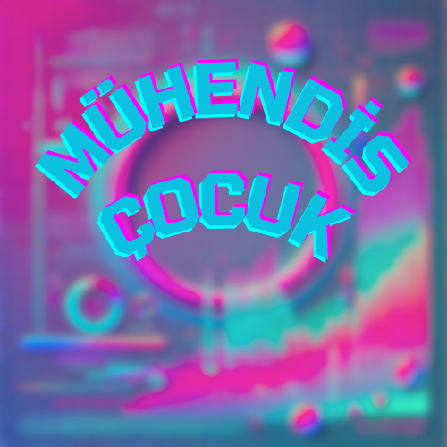

Blog Yazılarım ve Bilgi Paylaşımlarım

Teknoloji, yazılım ve bilim dünyasındaki en son gelişmeleri, ilginç konuları ve kişisel deneyimlerimi paylaştığım bloguma hoş geldiniz! Burada, karmaşık konuları anlaşılır bir dille ele alıyor, projelerimden öğrendiklerimi aktarıyor ve teknolojiye dair düşüncelerimi sizlerle paylaşıyorum. Hem güncel haberleri hem de detaylı bilgi paylaşımlarını bu sayfada bulabilirsiniz.
Teknoloji Bilgi Bankası
VR (Sanal Gerçeklik), kullanıcıyı bilgisayar tarafından oluşturulan bir ortamda gerçek gibi hissettiren bir teknoloji türüdür. VR cihazları (genellikle başlık, gözlük veya eldiven gibi araçlar) kullanılarak, kullanıcılar sanal bir dünyada etkileşimde bulunabilirler. Bu teknoloji, görsel, işitsel ve bazen dokunsal geri bildirimler sağlayarak, gerçek dünyadan tamamen farklı bir deneyim sunar. VR, genellikle oyunlar, eğitim, simülasyonlar ve tasarım gibi alanlarda kullanılır.
Yapay zeka, makinelerin insan benzeri düşünme ve öğrenme becerilerini kazanmasını sağlayan bir teknolojidir. AI, günümüzde birçok sektörde kullanılıyor, özellikle oyun geliştirme, otomasyon ve sağlık alanlarında büyük bir devrim yaratıyor. Yazımda AI’nın temel prensiplerini ve kullanım alanlarını ele alıyorum. Yapay zeka ile ilgili daha detaylı bilgi: Yapay zeka, insanların karmaşık problemleri çözme, öğrenme ve karar verme yeteneklerini taklit eden veya simüle eden bir bilgisayar bilimi alanıdır. Temel olarak, makinelerin akıllı davranışlar sergilemesini hedefler. Bu, kural tabanlı sistemlerden (uzman sistemler) makine öğrenimi ve derin öğrenmeye kadar geniş bir yelpazeyi kapsar. Günümüzde, doğal dil işleme, görüntü tanıma, öneri sistemleri ve otonom araçlar gibi birçok alanda yapay zeka uygulamaları görmek mümkündür. Yapay zekanın gelişimi, gelecekte insan yaşamını kökten değiştirebilecek potansiyele sahiptir.
Arduino, açık kaynaklı bir donanım ve yazılım platformudur. Elektronik projelerinde yaygın olarak kullanılır ve özellikle prototip geliştirme alanında önemli bir araçtır. Arduino'nun nasıl çalıştığını ve temel projeler için nasıl kullanıldığını detaylı olarak açıklıyorum.
ML-Agents, Unity'nin yapay zeka (YZ) eğitimini kolaylaştıran bir araç setidir. Bu araç, oyunlar veya simülasyonlar içinde ajanların (YZ'lerin) öğrenmesini sağlar. Ajanlar, çevresini gözlemleyip eylemler seçerek ödüller veya cezalarla stratejilerini geliştirir.
Oyun dünyasına adım atmak isteyenler için Unity, harika bir başlangıç noktasıdır. Peki, bu güçlü motorla oyun geliştirmeye nereden başlamalı? Unity, 2D ve 3D oyunlar, sanal gerçeklik (VR) ve artırılmış gerçeklik (AR) deneyimleri oluşturmak için kullanılan popüler bir platformdur. Kullanıcı dostu arayüzü ve geniş topluluk desteği sayesinde, yeni başlayanlar bile kısa sürede etkileyici projeler geliştirebilir. Unity'de bir oyun geliştirmeye başlarken sahne oluşturma, objeler ekleme, C# ile kodlama yapma ve etkileşimleri yönetme gibi temel adımlarla ilerlenir. Bu süreçte animasyonlar, fizik motoru ve kullanıcı arayüzü (UI) elemanları gibi bileşenler de kullanılır. Unity öğrenmek, hem eğlenceli hem de kariyer açısından değerli bir beceri kazandırır.
3D modelleme dünyasına adım atmak göz korkutucu görünebilir, ancak Blender gibi ücretsiz ve güçlü bir araçla bu süreç oldukça keyifli hale gelebilir. Blender, sadece modelleme değil, aynı zamanda animasyon, render, heykel (sculpting) ve video düzenleme gibi birçok farklı alanda kullanılan kapsamlı bir 3D grafik yazılımıdır. Yeni başlayanlar için temel arayüzü tanımak, objeleri oluşturmak, dönüştürmek ve düzenlemek gibi adımlarla başlanabilir. Poligon modelleme, heykel modelleme ve NURBS gibi farklı tekniklerle çeşitli 3D modeller oluşturulabilir. Blender, kişisel projelerden profesyonel animasyon stüdyolarına kadar geniş bir yelpazede kullanılabilir ve sürekli gelişen bir topluluğa sahiptir.